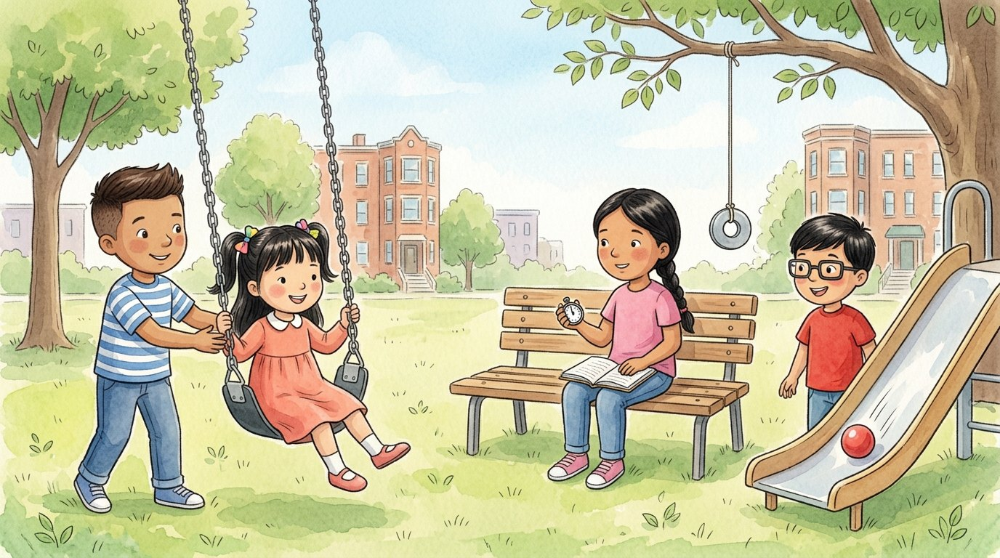

Grade 3 · Science · 3-PS2-2
The swing you could predict
A story about movements that repeat.
Science words you will learn
Tap a green word to see what it means.
The story
On Saturday, Israel took his cousin Génesis to the park. "Push me, Israel!" she shouted from the swing.
Israel gave her one push. The swing went up in front, came down, went up in back and came down again. Forward and back, forward and back.
Lucía was on a bench with her notebook, and she began to carefully. "Look! The swing always does the same thing. It's a : a that over and over."
Lucía started the stopwatch on her watch. She wanted to how long the swing took to go out and back. She counted: one, two, three seconds… and the next time, three seconds again!
"Because the motion repeats, we can where the swing will be," said Lucía. "In three seconds, Génesis will be right here in front of us again."
Israel counted out loud, and Génesis swung right past them. "You guessed!" the little girl laughed. "I didn't guess," said Lucía. "I used the pattern to know what would happen."
At home, the cousins did an experiment. They tied a metal washer to a string and hung it from a branch. They had built a : a weight that hangs and swings from side to side in a regular pattern.
Adrián rolled a ball down the slide again and again. It always rolled along the same path and stopped near the same spot. "The slide has a pattern too," said Israel. "If we watch it many times, we can predict where the ball will stop."
That night, Israel watched the pendulum in Grandma's clock: tick, tock, tick, tock. He smiled. Now he knew the world is full of motions that repeat, and that observing them helps us predict.
Glossary
- pattern
- Something that repeats the same way every time, like a swing going back and forth.
- motion
- A change in an object's position.
- repeat
- To happen again, or to be done again, in the same way.
- predict
- To say what will happen before it happens, using what we observe.
- pendulum
- A weight hanging from a string or rod that swings from side to side.
- observe
- To look at something very carefully to learn about it.
- measure
- To find out how long, how heavy or how much time something is, using a ruler, a scale or a clock.
Questions
Choose the correct answer. If you make a mistake, the story shows you where the answer is.
-
Question A. What is a pattern of motion?
A pattern is a motion that repeats over and over, like the swing's.
-
Question B. Why is it useful to know the swing's pattern?
Because the motion repeats, Lucía could predict where the swing would be.
-
Question C. Did Lucía guess when Génesis swung past them?
Lucía didn't guess: she used the pattern to know what would happen.
-
Question D. What is a pendulum?
A pendulum is a weight that hangs and swings from side to side in a regular pattern.
-
Question E. How can you predict where the ball on the slide will stop?
If we watch many times, we can see the pattern and predict where it will stop.